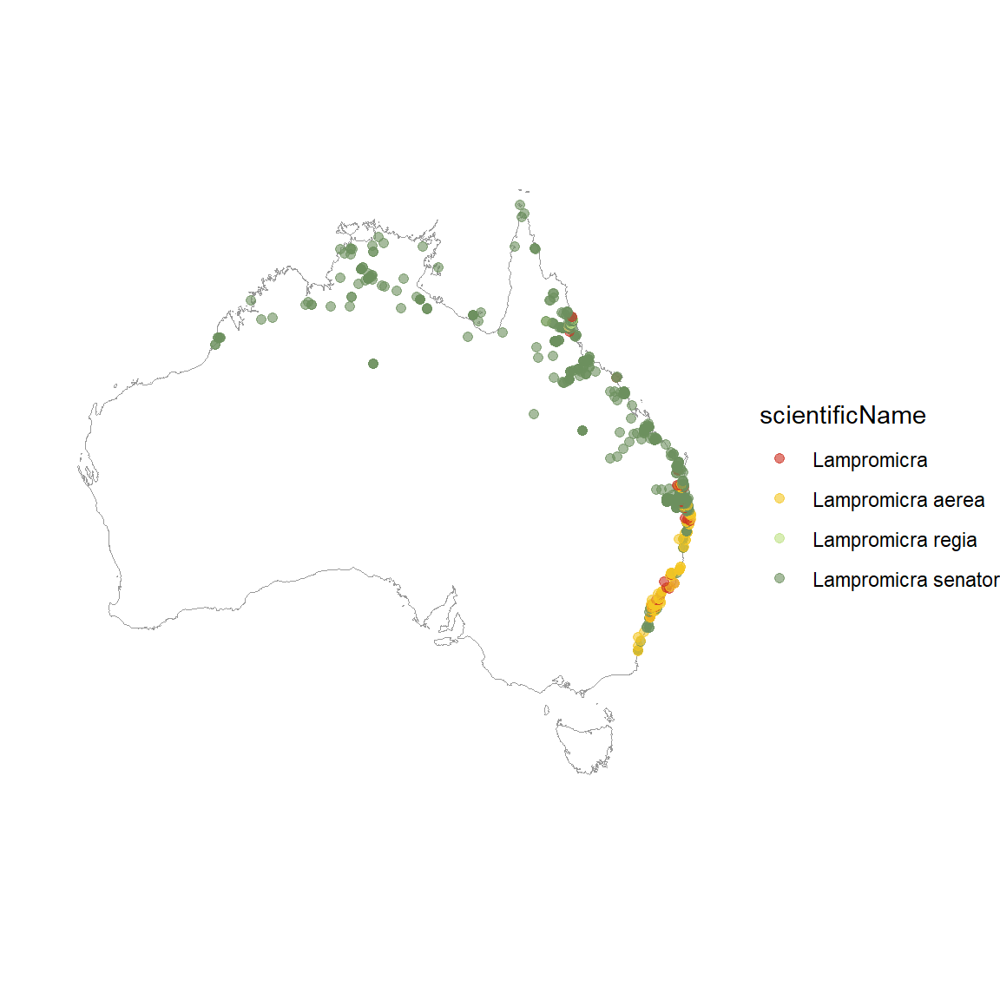

library(galah)
atlas_counts()# A tibble: 1 × 1
count
<int>
1 125686851Data scope refers to the type and breadth of data needed for your project. Defining your scope is an essential part of forming a research question, ultimately impacting what data you will use in your project. Depending on the data available, your scope and research question may change.
For example, you might have a question about several species in the same area. However, data for one or more of those species could be limited because observations are rare, surveying the area where it lives is difficult, or only several historical records exist.
Without narrowing your data scope, you might find yourself downloading more data than you need, which can needlessly increase how much time is spent processing data prior to analyses. Alternatively, you might find there isn’t enough data to answer your question.
It’s worth thinking critically about whether the amount of data available will allow you to sufficiently answer your research question.
To start, some initial questions you might ask are:
What is the temporal unit relevant for your research question?
Am I only interested in more recent data? Is there data that are too old to be relevant for my question?
What is the taxonomic unit of your proposed research question?
Is my question specific to one or more species in the same taxonomic group? Does it compare between higher taxonomic levels like genus, family or order?
What is the spatial scale of your proposed research question?
Is my question relevant at a global or national level, or is it specific to a region or ecosystem?
Questions like these will help you define what data is most relevant for your research question, and help you begin to think about how much evidence available, and the trade-offs you might make between the specificity of your question and the certainty of your answer.
As an example, let’s imagine we were interested in understanding more about the distribution of several Jewel beetles in the genus Lampromicra. Let’s see some ways we might investigate what data are available about them in Australia.
A good first step to understanding what data are available is to check how many observations there are over different time periods. We can check how many total observations there are in the Atlas of Living Australia (the largest biodiversity data aggregator in Australia) with the following query:
library(galah)
atlas_counts()# A tibble: 1 × 1
count
<int>
1 125686851Now let’s check how many total insect records there are.
galah_call() |>
galah_identify("insecta") |>
atlas_counts()# A tibble: 1 × 1
count
<int>
1 5458391Now let’s see how many insects have been observed each year over the last 10 years. We’ll order this by descending year using dplyr::arrange() and dplyr::desc().
library(dplyr)
galah_call() |>
galah_identify("insecta") |>
galah_filter(year >= 2013) |>
galah_group_by(year) |>
atlas_counts() |>
dplyr::arrange(dplyr::desc(year))# A tibble: 11 × 2
year count
<chr> <int>
1 2023 281187
2 2022 446391
3 2021 354985
4 2020 263757
5 2019 185097
6 2018 228057
7 2017 194184
8 2016 169418
9 2015 124221
10 2014 126431
11 2013 115521Now that we have an idea of the total amount of data in the Atlas of Living Australia, let’s try checking how many observations exist of the genus Lampromicra. We’ll first make sure the scientific name Lampromicra returns the taxon information we expect with search_taxa().
search_taxa("Lampromicra")# A tibble: 1 × 13
search_term scientific_name scientific_name_authorship taxon_concept_id rank
<chr> <chr> <chr> <chr> <chr>
1 Lampromicra Lampromicra Stål, 1873 https://biodiver… genus
# ℹ 8 more variables: match_type <chr>, kingdom <chr>, phylum <chr>,
# class <chr>, order <chr>, family <chr>, genus <chr>, issues <chr>This looks correct! Next let’s see how many total observations there are of Lampromicra and how many observations there were in each of the last 10 years.
galah_call() |>
galah_identify("Lampromicra") |>
atlas_counts()# A tibble: 1 × 1
count
<int>
1 1240galah_call() |>
galah_identify("Lampromicra") |>
galah_filter(year >= 2013) |>
galah_group_by(year) |>
atlas_counts() |>
dplyr::arrange(dplyr::desc(year))# A tibble: 11 × 2
year count
<chr> <int>
1 2023 107
2 2022 229
3 2021 218
4 2020 150
5 2019 75
6 2018 53
7 2017 44
8 2016 42
9 2015 13
10 2014 14
11 2013 6There are a growing number of observations from 2012 to 2023 of Jewel beetles in the Atlas of Living Australia, with fewer than 100 observations each year prior to 2020.
With this information, we might choose to combine data from all years in our analysis (rather than separating them by year). Alternatively, we might decide to only include data since 2020, which might be sufficient to represent where Lampromicra are found and be more relevant because they are more recent observations. These are decisions that might affect the granularity of the research question we ask.
Taxonomy refers to way by which we classify an organism and its relationship to all other organisms. Typically, your research question be concerned with one or more taxonomic groups, ranging from a single species to an entire kingdom (e.g. Plantae).
In our example, we are interested in understanding more about Jewel beetles in the genus Lampromicra.
We first might want to know what species there are in the genus Lampromicra and view some additional taxonomic information about them. We can do this by adding atlas_species() to the end of a query in {galah}.
You will need to add an email address registered with the Atlas of Living Australia in galah_config() to download species information.
galah_config(email = Sys.getenv("ALA_EMAIL"))
galah_call() |>
galah_identify("Lampromicra") |>
atlas_species() |>
select(family:species_guid)# A tibble: 3 × 5
family genus species author species_guid
<chr> <chr> <chr> <chr> <chr>
1 Scutelleridae Lampromicra Lampromicra senator (Fabricius, 1803) https://biodi…
2 Scutelleridae Lampromicra Lampromicra aerea (Distant, 1892) https://biodi…
3 Scutelleridae Lampromicra Lampromicra regia Bergroth, 1895 https://biodi…Our query returned three species in the genus Lampromicra. We can enter the urls returned under species_guid in a web browser if we wished to know more information about any of them.
We might also wish to check the total number of observations of each of these species. We can check this by grouping our counts by species using galah_group_by(species)
galah_call() |>
galah_identify("Lampromicra") |>
galah_group_by(species) |>
atlas_counts()# A tibble: 3 × 2
species count
<chr> <int>
1 Lampromicra senator 1008
2 Lampromicra aerea 162
3 Lampromicra regia 13Our result shows that the majority of observations of Lampromicra are of the species Lampromicra senator.
Given this information, we might consider whether our question needs to be made at the species level, or whether we might increase the taxonomic scope to the genus or family level to use more data. Ultimately, the taxonomic scope of your data will depend on how important it is to your question to compare specific taxonomic groups.
It’s useful to investigate the spatial range of available data for your taxonomic group(s) of interest. How specific your question can be may change depending on whether the majority of data is in only a few locations or evenly spread over the entire distribution of a species or taxonomic group.
For our example question about Lampromicra, we may wish to map where observations in Australia have been made. We can do this by using the {ozmaps} package to download a nice map of Australia, plot it with sf::geom_sf(), and add our observation points on top with geom_point(). We can separate the colours of our points by setting colour = scientificName within the aes() of geom_point().
You will need to add an email address registered with the Atlas of Living Australia in galah_config() to download species information.
# old fonti code. not sure why it's saved?
# beatles <- open_dataset("data/galah/lampromicra") |> collect()
library(ozmaps)
library(sf)
library(ggplot2)
library(paletteer) # colour palettes
# Download data
galah_config(email = Sys.getenv("ALA_EMAIL"))
beetles <- galah_call() |>
galah_identify("lampromicra") |>
atlas_occurrences() |>
tidyr::drop_na() # remove any NA values
# Get map of australia, set to correct projection for data
aus <- st_transform(ozmaps::ozmap_country, 4326)
# Map
ggplot() +
geom_sf(data = aus,
colour = "grey60",
fill = "white",
alpha = 0.2) +
geom_point(data = beetles,
mapping = aes(x = decimalLongitude,
y = decimalLatitude,
colour = scientificName),
size = 1.8,
alpha = 0.6) +
scale_color_paletteer_d("feathers::eastern_rosella") +
coord_sf(xlim = c(110, 155),
ylim = c(-45, -10)) +
theme_void()
Plotting our points shows us that observations are spread along the northern and eastern coasts of Australia. We can also see that some observations are only identified to the genus level (e.g. Lampromicra), rather than to a specific species (e.g. Lampromicra aerea).
There are several places on the east coast of Australia where there are clumps of overlapping points. It’s difficult to tell how many observations there really are in those areas. To investigate, we can create use ggdfdf from the {ggpointdensity package} to get an idea of the density of overlapping points.
library(ggpointdensity)
ggplot() +
geom_sf(data = aus,
colour = "grey60",
fill = "white",
alpha = 0.2) +
geom_pointdensity(data = beetles,
mapping = aes(x = decimalLongitude,
y = decimalLatitude)) +
scale_color_paletteer_c("viridis::plasma") +
coord_sf(xlim = c(110, 155),
ylim = c(-45, -10)) +
theme_void()
Adding the density of overlapping points to our map allows us to see that there is one area with many more observations—more than 400 observations are found in the light yellow area!
Using this information, we might decide to make our research question more specific to the region where there are the most records of Lampromicra. Alternatively, we might decide that there isn’t enough data to make accurate estimates about Lampromicra. Depending on the spatial specificity of your question, you might have to adjust your data scope or your question accordingly.
This chapter has demonstrated some ways to initially investigate the data available to answer a research question using the {galah} package. This is just a small example of how you might go about interogating the data to think critically about your data scope.
The next chapter will explain how you can download and save your data set to begin the first step of your analysis.